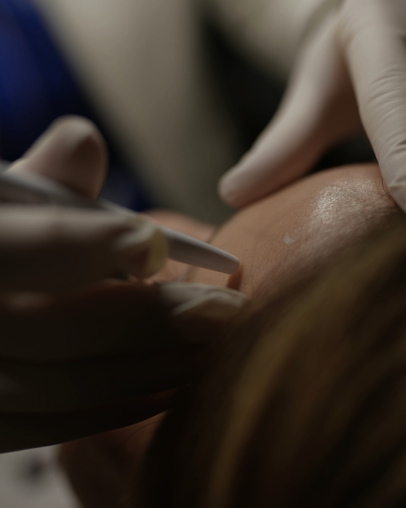
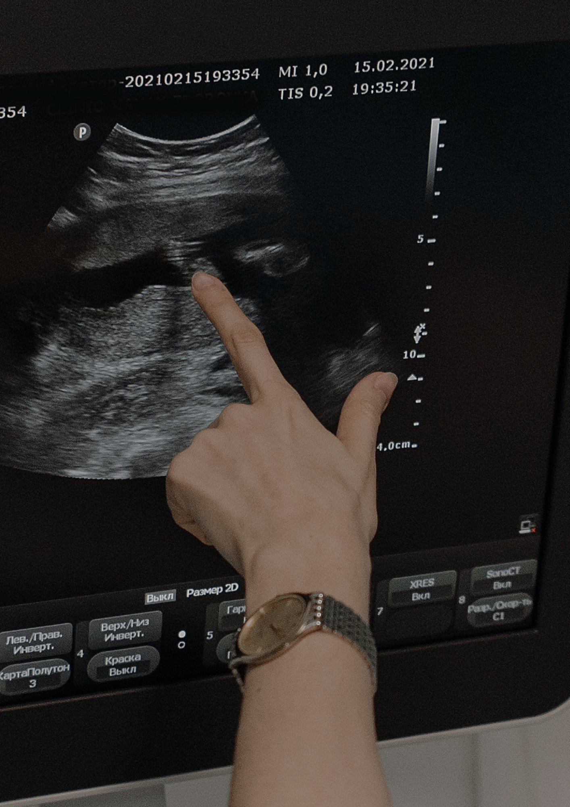

Orari
Lun-Sab: 9.00 - 19.00
(si riceve solo su appuntamento)
Dall’esperienza del Laboratorio De Vitis, un nuovo punto di riferimento per visite specialistiche e servizi sanitari a Lecce.
Scopri le branche mediche del nostro poliambulatorio e trova lo specialista più adatto alle tue esigenze.
Scopri tutte le specializzazioni

In questa sezione puoi consultare gli orari di apertura, trovare tutte le indicazioni per raggiungere la nostra sede e conoscere i recapiti a tua disposizione.
Per qualsiasi domanda o necessità di chiarimento, puoi contattarci telefonicamente o tramite email: il nostro staff sarà lieto di fornirti tutte le informazioni di cui hai bisogno.
Lun-Sab: 9.00 - 19.00
(si riceve solo su appuntamento)
Via Cicolella, 3
Lecce (LE) 73100